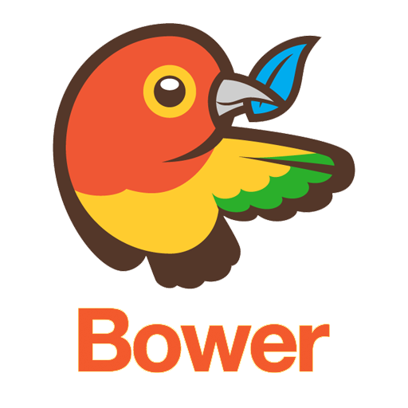

Qué es un manejador de paquetes?
"Un manejador de paquetes es una colección de herramientas de software que automatiza los procesos de instalación, actualización, configuración y remoción de programas (librerias o frameworks en este caso)" - Wikipedia.
Por qué un manejador de paquetes para Javascript?
Nos guste o no Javascript se ha convertido en uno de los lenguajes mas diversificados de la web.
A la fecha existen miles de framweworks y librerías basadas en Javascript.
Frameworks y Librerías basadas en Javascript
| Nombre | Uso/Propósito |
|---|---|
| MariaJS | MVC framework |
| AureliaJS | UI framework |
| Lodash | Utility Framework |
| Meteor | Build env Framework |
| 101 | Utility Framework |
| ExpressJS | Server framework |
| RaphaelJS | Vector Graphics Library |
| BackboneJS | MVC framework |
| EmberJS | MVC framework |
| Jasmine | Testing framework |
| KnockoutJS | MVC framework |
| EnzymeJS | Testing framework |
Y much@s más ...
Cómo manejo todas esas dependencias?
Boilá y ahí entran en acción los manejadores de paquetes de Javascript
dependencies:
dependencies definition
devDependencies:
devDependencies definition
peerDependencies:
peerDependencies definition
optionalDependencies:
optionalDependencies definition
Cuál es el manejador de paquetes más popular ahora mismo?
Voy a mencionar los más populares, algunos de ellos ya no tanto pero aún son mencionados y uno que llamó mi atención
- Bower
- NPM
- Yarn

Bower
Características
- Para paquetes de Front-end
- Se recomienda instalación con NPM
- Soporta instalar paquetes sin conexión a Internet
Principales comandos
npm i -g bower
bower init
bower install (-S / -D) (--offline)
bower cache (list / clean)
bower list –paths
bower update
bower register
bower search
NPM
Características
- Para paquetes de Front-end & Back-end
- Se recomienda instalación con Node or NVM
- No soporta instalar paquetes sin conexión a Internet
Principales comandos
npm init (-y)
npm install (-S / -D)
npm list (--json=true / --depth=0)
npm outdated
npm uninstall
npm publish
npm dedupe
npm unpublish
npm repo
npm root
npm search
npm version
Yarn
Características
- Para paquetes de Front-end & Back-end
- Se recomiendaba instalación con NPM
- Soporta instalar paquetes sin conexión a Internet
Principales comandos
yarn init (-y)
yarn add (-D / -P / -O )
yarn upgrade
yarn remove
yarn / yarn install
yarn publish
yarn info
yarn ls (--json=true / --depth=0)
yarn outdated
yarn run <script name>
yarn version
Velocidad
npm => react 0.14.8 => 15.9 seg
yarn => react 0.14.8 => 8.56seg
Especificaciones Semvers
Patch releases: 1.0 or 1.0.x or ~1.0.4
Minor releases: 1 or 1.x or ^1.0.4
Major releases: * or x
Preguntas???
Muchas Gracias!!!